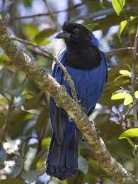

No folclore do estado do Paraná atribui-se a formação e a manutenção das florestas de araucária a este pássaro, como uma missão divina, razão porque as espingardas explodiriam ou negariam fogo quando para elas apontadas. Além disso, a ave, que como dito anteriormente está associada à Mata das Araucárias e sendo o estado famoso pelo bioma, é um dos símbolos do estado do Paraná, segundo a Lei Estadual n. 7957 de 1984 que a consagra como “ave símbolo” deste Estado. No estado do Paraná, embora seja muito associada às florestas de araucárias, é muito mais comum em áreas de Mata Atlântica da planície litorânea.
